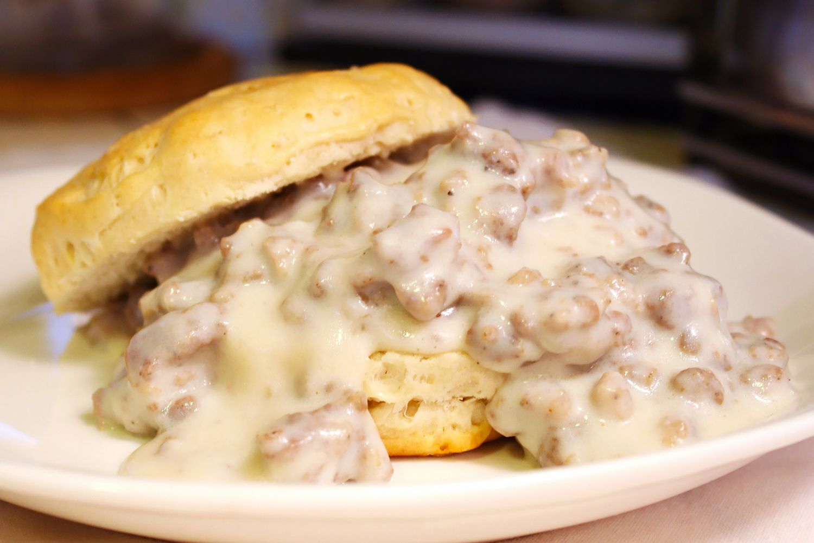

Sausage Gravy

I hope you like sausage gravy!
This recipe will help you to make a savory sausage gravy! This dish goes great with almost any southern style breakfast, but goes especially well with butter biscuits.
Ingredients
- 1 pound pork breakfast sausage
- 1 tablespoon salted butter or bacon fat
- 1/4 cup all-purpose flour
- 2 1/3 cup milk
- salt and pepper to taste
Steps
- Brown sausage over medium high heat until no pink reamains. (Do not drain)
- Add butter (or bacon fat) and cook to melt. Stir in flour and cook 2 minutes
- Add milk a little bit at a time stirring after each addition.
- Bring to a boil, reduce heat and simmer until thick and bubbly
- Season with salt and pepper to taste